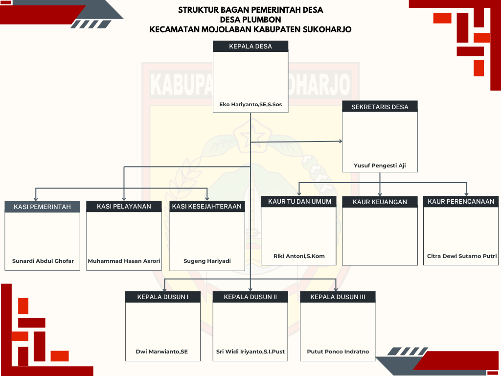

Daftar Desa · Kecamatan Mojolaban
Desa Plumbon
Desa di tepi Sungai Bengawan Solo yang berbasis pertanian padi serta dikenal lewat karak dan kain pantai; memiliki 5.646 penduduk pada 2025, menempati urutan kesembilan dari 15 desa di Mojolaban.
Penduduk 2025
Pada tahun 2025, Desa Plumbon memiliki 5.646 penduduk yang terdiri dari 2.809 laki-laki dan 2.837 perempuan. Plumbon merupakan desa dengan jumlah penduduk terbesar kesembilan di Kecamatan Mojolaban.
| Indikator | Jumlah |
|---|---|
| Kepala keluarga laki-laki | 1.555 |
| Kepala keluarga perempuan | 399 |
| Total kepala keluarga | 1.954 |
| Jumlah kartu keluarga | 1.955 |
| Agama | Jumlah |
|---|---|
| Islam | 5.430 |
| Kristen | 154 |
| Katolik | 53 |
| Hindu | 3 |
| Budha | 6 |
| Konghucu dan kepercayaan | 0 |
Sumber: BPS Kabupaten Sukoharjo, Kecamatan Mojolaban Dalam Angka (tabel penduduk, kepadatan, kepala keluarga, dan agama); data Dispendukcapil Kab. Sukoharjo, Semester II Tahun 2025.
Sejarah dan potensi
Menurut cerita sesepuh, pada tahun 1741 M R.T. Honggowongso berangkat dari Kraton Surakarta ke arah timur Sungai Bengawan Solo untuk mencari tempat guna perpindahan keraton. Setelah tujuh hari berjalan tanpa petunjuk, ia kelelahan, haus, dan lapar, lalu terjatuh ke sebuah balumbang (kolam besar) yang penuh tanaman talas dan lumbu. Ia berdoa agar tempat itu kelak makmur dan menamainya Desa Palumbon, yang kini disebut Desa Plumbon.
Potensi utama desa ada di sektor pertanian, dengan lahan sawah beririgasi teknis dan padi sebagai komoditas utama. Perekonomian desa juga ditopang BUMDes Ngudi Rejeki yang mengelola persewaan kios dan gedung serba guna, peternakan kambing, pengelolaan sampah, serta simpan pinjam.
Dari sisi industri, Plumbon dikenal dengan dua komoditas unggulan. Pertama, karak, sejenis kerupuk dari nasi yang dikeringkan lalu digoreng hingga renyah, yang menjadi camilan favorit di tingkat lokal maupun luar daerah. Kedua, kain pantai dengan beragam motif dan warna, yang banyak dicari terutama pada musim liburan. Kain pantai dari Plumbon dipasarkan luas, mulai dari Pasar Klewer di Solo hingga pasar-pasar di Yogyakarta dan Pacitan. Kedua industri ini memberi kontribusi besar bagi pendapatan warga dan perekonomian lokal.
- Letak
- Di tepi timur Sungai Bengawan Solo, Kecamatan Mojolaban
- Batas wilayah
- Utara: Desa Gadingan · Selatan: Desa Wirun · Barat: Sungai Bengawan Solo · Timur: Desa Dukuh
- Potensi unggulan
- Pertanian padi, usaha BUMDes, serta industri karak dan kain pantai
- Pemasaran kain pantai
- Pasar Klewer (Solo), Yogyakarta, dan Pacitan
Sumber: Sejarah Desa, portal resmi Pemerintah Desa Plumbon (plumbon-sukoharjo.desa.id (situs luar)).
Visi dan misi
Visi
“Menjadi Desa yang Berdya, Modern, Transparan dan Religius”
Misi
Misi disusun bersama lembaga desa dan warga dalam RPJM Desa 2022–2028:
- Mewujudkan pemerintahan yang efektif, bersih, dan demokratis melalui penyelenggaraan pemerintahan yang profesional, aspiratif, partisipatif, dan transparan.
- Meningkatkan kualitas dan kuantitas sarana dan prasarana publik serta menerapkan pembangunan infrastruktur berkelanjutan.
- Mengoptimalkan ketepatan alokasi dan distribusi sumber dana, khususnya APBDes, untuk meningkatkan kesejahteraan masyarakat.
- Meningkatkan kecerdasan dan kualitas SDM yang beriman dan bertaqwa kepada Tuhan Yang Maha Esa.
- Mendorong terciptanya Kamtibmas melalui pembuatan Perdes, penegakan peraturan, dan pelaksanaan hukum yang berkeadilan.
- Meningkatkan ekonomi kerakyatan yang berdaya saing.
- Meningkatkan kegiatan bidang seni budaya dan olahraga.
Sumber: Visi & Misi, portal resmi Pemerintah Desa Plumbon.
Perangkat desa

| Jabatan | Nama | Keterangan |
|---|---|---|
| Kepala Desa | Eko Hariyanto, S.E., S.Sos | Menjabat periode 2022–2030 |
| Sekretaris Desa | Yusuf Pengesti Aji | Membawahi tiga Kepala Urusan |
| Kaur TU dan Umum | Riki Antoni, S.Kom | Kepala Urusan Tata Usaha dan Umum |
| Kaur Keuangan | - | Nama belum tercantum di bagan struktur |
| Kaur Perencanaan | Citra Dewi Sutarno Putri | Menyusun perencanaan desa |
| Kasi Pemerintahan | Sunardi Abdul Ghofar | Pelaksana teknis bidang pemerintahan |
| Kasi Pelayanan | Muhammad Hasan Asrori | Pelaksana teknis bidang pelayanan |
| Kasi Kesejahteraan | Sugeng Hariyadi | Pelaksana teknis bidang kesejahteraan |
| Kepala Dusun I | Dwi Marwianto, S.E. | Kebayanan 1 |
| Kepala Dusun II | Sri Widi Iriyanto, S.Pust | Kebayanan 2 |
| Kepala Dusun III | Putut Ponco Indratno | Hanya tercantum di bagan struktur |
| Kategori | Jumlah |
|---|---|
| Kepala desa | 1 |
| Sekretaris desa | 1 |
| Kaur/Kasie | 5 |
| Kadus/Bayan | 2 |
| Total | 9 |
Sumber: bagan struktur dan daftar perangkat, portal resmi Pemerintah Desa Plumbon; BPS Kabupaten Sukoharjo (sumber Pemerintah Kecamatan). Jumlah BPS berbeda dari bagan desa (6 Kaur/Kasi dan 3 Kadus).
Kedudukan, tugas, dan fungsi perangkat
01Kepala Desa
Pejabat: Eko Hariyanto, S.E., S.Sos
Tugas (Pasal 6 ayat 1): Menyelenggarakan pemerintahan desa, melaksanakan pembangunan desa, melakukan pembinaan kemasyarakatan, dan mendorong pemberdayaan masyarakat.
- Tata pemerintahan: peraturan desa, administrasi, pertanahan, ketertiban.
- Pelaksanaan pembangunan: sarana prasarana, pendidikan, kesehatan.
- Pembinaan masyarakat: hak warga, partisipasi, agama, ketenagakerjaan.
- Pemberdayaan: budaya, ekonomi, olahraga, pemuda, lingkungan.
- Menjalin kemitraan dengan lembaga masyarakat; perangkat desa wajib melapor secara berkala (tiap semester atau sewaktu-waktu).
02Sekretariat Desa
Pejabat: Yusuf Pengesti Aji (Sekretaris Desa)
Tugas: Membantu Kepala Desa di bidang administrasi pemerintahan: tata naskah, surat-menyurat, arsip, administrasi perangkat dan prasarana kantor, penyiapan rapat, aset dan inventaris, perjalanan dinas, keuangan, dan perencanaan.
03Kepala Urusan (Kaur)
- Kaur TU dan Umum (Riki Antoni, S.Kom): Tata naskah, surat-menyurat, arsip, aset, inventarisasi, penyiapan rapat, dan pelayanan umum.
- Kaur Keuangan: Pengelolaan anggaran, verifikasi administrasi keuangan, dan administrasi penghasilan perangkat desa.
- Kaur Perencanaan (Citra Dewi Sutarno Putri): Menyusun RKP dan APBDes, monitoring, evaluasi, dan laporan.
04Kepala Seksi (Kasi)
- Kasi Pemerintahan (Sunardi Abdul Ghofar): Regulasi desa, pertanahan, ketertiban, kependudukan, penataan wilayah, dan profil desa.
- Kasi Pelayanan (Muhammad Hasan Asrori): Hak dan kewajiban warga, keagamaan, ketenagakerjaan, dan nilai sosial-budaya.
- Kasi Kesejahteraan (Sugeng Hariyadi): Pendidikan, kesehatan, kebudayaan, pemberdayaan ekonomi dan keluarga, pemuda, dan olahraga.
05Kepala Dusun (Kadus)
Tugas: Membantu Kepala Desa di wilayah dusun: menjaga ketentraman dan ketertiban, melindungi masyarakat, mengawasi pembangunan, membina dan memberdayakan masyarakat.
- Kepala Dusun I (Dwi Marwianto, S.E.)
- Kepala Dusun II (Sri Widi Iriyanto, S.Pust)
- Kepala Dusun III (Putut Ponco Indratno)
Sumber: Permendagri No. 84 Tahun 2015 tentang Susunan Organisasi dan Tata Kerja Pemerintah Desa; portal resmi Pemerintah Desa Plumbon.
Pertanian, industri, dan BUMDes
Penggunaan lahan, 2025
- Lahan sawah irigasi teknis146 ha
- Pekarangan / bangunan68 ha
- Lain-lain13,95 ha
- Lahan bukan sawah (tegal, kolam)2,05 ha
- Komoditas 2025
- Padi: 147,00 ha, perkiraan produksi 6,00 ton (sesuai angka tertulis di sumber)
- Industri unggulan
- Karak (kerupuk nasi kering goreng) dan kain pantai; kain pantai dipasarkan ke Pasar Klewer Solo, Yogyakarta, dan Pacitan
- BUMDes
- Ngudi Rejeki (ketua: Giman, berdiri 2019): persewaan kios, persewaan gedung serba guna, peternakan kambing, pengelolaan sampah, sewa sumur mersible, dan simpan pinjam
Sumber: Dinas Pertanian dan Perikanan Kab. Sukoharjo; data komoditas, industri, dan BUMDes pada portal resmi Pemerintah Desa Plumbon. Tiga entri BUMDes di portal bernama dan berketua sama, sehingga digabung.
Jaringan seluler 2025
- Kekuatan sinyal
- Kuat
- Sinyal internet seluler
- 5G/4G/LTE
Sumber: BPS, Pendataan Potensi Desa (Podes) 2025. Kecamatan Mojolaban memiliki 31 menara BTS.